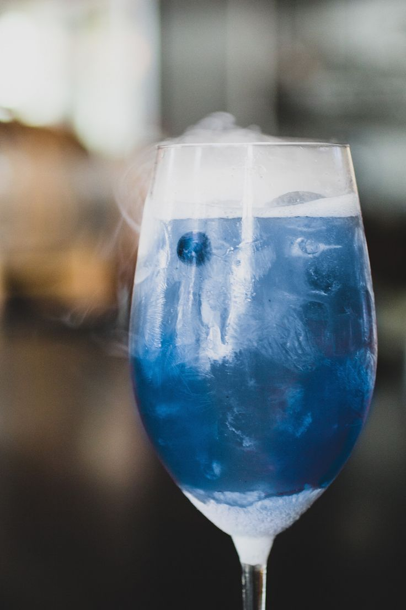
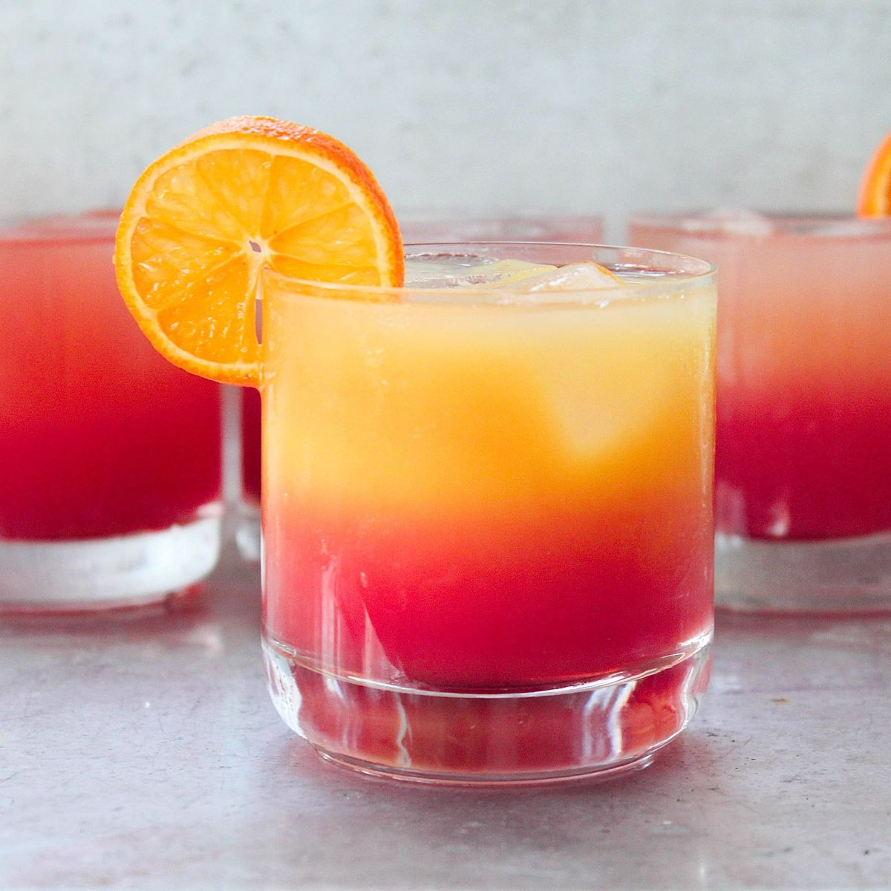
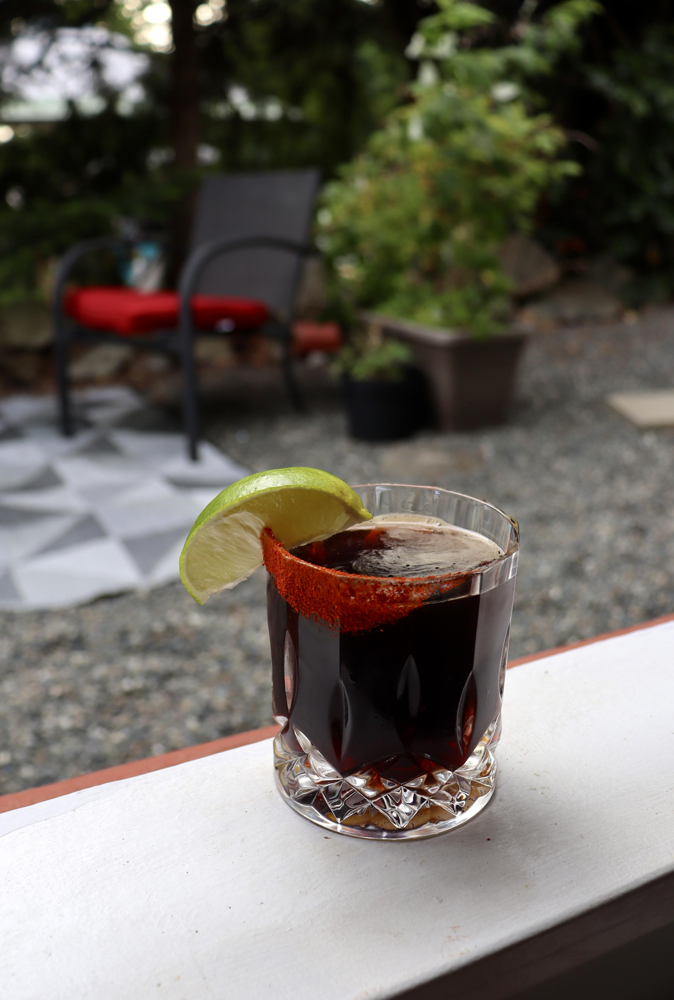

Time for disco, baby!
Spirit Bomb

Description
You're a master of revolution, baby
Ingredients
- 30 ml. lime juice
- 15 ml. blue Curaçao
- 15 ml. simple syrup
- 15 ml. italicus liqueur
Steps
- Add ingredients to the cocktail shaker
- Fill it with ice, seal than shake vigorously
- Carbonate using a siphon (if possible)
Tequila Sunset

Description
Disco inferno!
Ingredients
- 60 ml. tequila
- 120 ml. orange juice
- a drop of blackberry brandy liqueur
- orange and mint (for decoration)
Steps
- Add first two ingredients to the cocktail shaker
- Fill it with ice, seal than shake vigorously
- Pour into a glass and add a bit of liqueur
- Garnish with orange and mint
Sunrise Parabellum

Description
Revolutionary speaking
Ingredients
- 15 ml. simple syrup
- 22 ml. Dry Curaçao
- 15 ml. Chartreuse liqueur
- 45 ml. coffee liqueur
- 15 ml. scotch
- orange peel (for decoration)
Steps
- Add ingredients to the glass
- Fill it with ice, than mix
- Pour into a glass and add a bit of liqueur
- Garnish with burnt orange peel
Credits